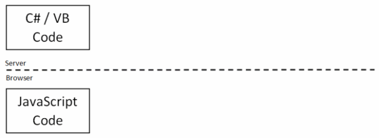
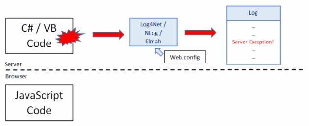
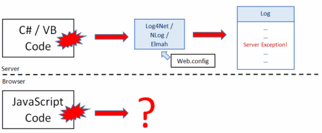
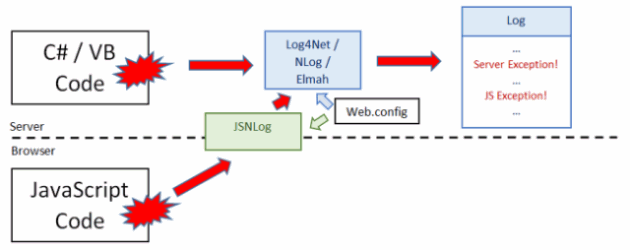

Include JavaScript exceptions in your server side logs with JSNLog
JSNLog lets you insert loggers in your client side JavaScript, configure them in your web.config, and store their messages in your server side logs.
Introduction
JSNLog is a logging package, similar to Log4Net, NLog, Elmah, etc.
However, instead of server side events (in your C# or VB code), it logs events that happen in your JavaScript.
NuGet installation:
Install-Package JSNLog
It has 2 components:
-
The client side component jsnlog.js has logging methods, so your JavaScript code can log events.
It sends these to the server using AJAX.
-
The server side component receives the log messages from the client.
It then passes them on to your
server side logging package, to store in your server side log.
JSNLog assumes you already have installed server side logging. It simply passes its log messages on to your
server side logging package, so client side log message will go to the same logs as your server side log messages.
It will interface
with Log4Net, NLog, Elmah and
Common.Logging.
Why and how
Your web site consists of C#/VB code running on the server, and JavaScript running on the browser.

When an exception happens in your C#/VB code, you log it, so you can fix the bug.
Using your server side logging package, such as Log4Net, NLog or Elmah, with loggers configured via web.config.
try
{
....
}
catch (Exception e)
{
ILog log = LogManager.GetLogger("serverlogger");
log.Fatal(e.ToString());
}

But what about exceptions in your JavaScript code?
try
{
....
}
catch(err)
{
????
}

Log the exception on the client with JSNLog, which sends it to the server.
JSNLog will pass the log message on to your server side logging package,
so it winds up in your server side logs. Configure your client side loggers in web.config.
try
{
....
}
catch(err)
{
JL("jsLogger").fatal(err.message);
}

Benefits
-
Extensive documentation. Easy to install.
-
No need to pay fees to a third party logging service.
-
Client side log messages go into the same logs as your server side log messages.
-
Find out which log messages were generated as part of the same web request through request ids.
-
Configure client side loggers in your web.config.
-
Send log messages in batches of 2 or more for greater efficiency.
-
Enable logging only for browsers that give you problems, such as IE 8.
-
Generate trace messages that are useful for fixing exceptions, but store them in a buffer
on the client. Only send them when there is an actual exception. Get all the info you need, but only when you need it.
Documentation and installation instruction are on the
JSNLog website. You can install JSNLog via NuGet:
Install-Package JSNLog